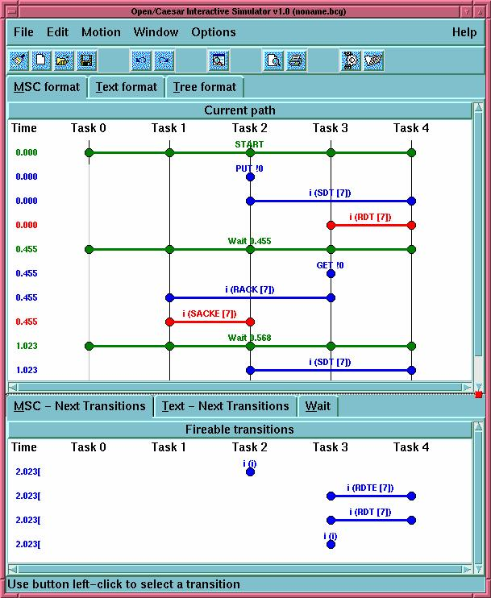
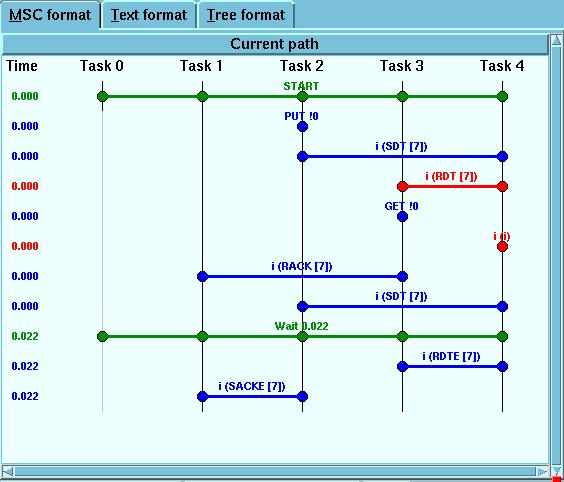
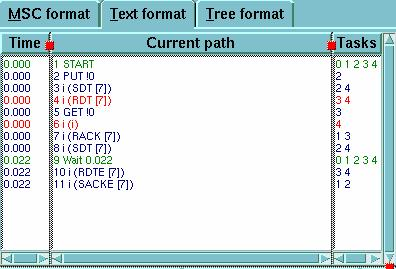
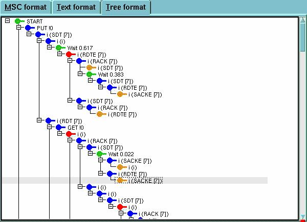
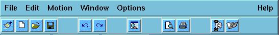
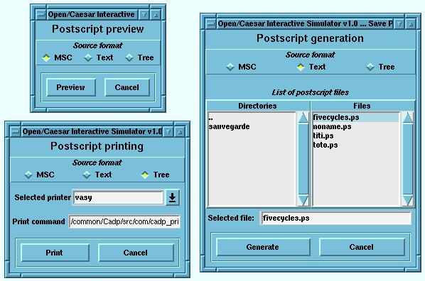
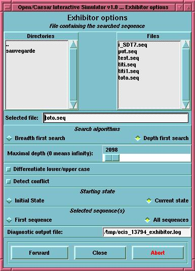
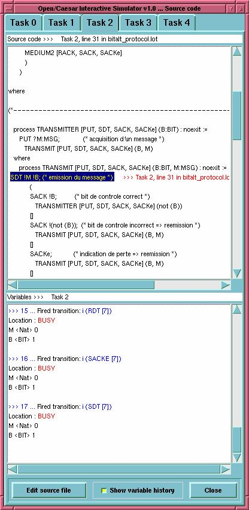
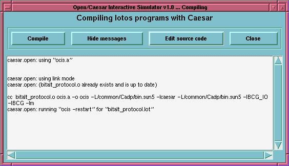

Table of Contents
ocis - Open/Caesar Interactive Simulator
bcg_open [bcg_opt]
spec[.bcg] [cc_opt] ocis [ocis_opt]
or:
exp.open [exp_opt] spec[.exp] [cc_opt]
ocis [ocis_opt]
or:
fsp.open [fsp_opt] spec[.lts] [cc_opt] ocis [ocis_opt]
or:
lnt.open [lnt_opt] spec[.lnt] [cc_opt] ocis [ocis_opt]
or:
lotos.open
[lotos_opt] spec[.lotos] [cc_opt] ocis [ocis_opt]
or:
seq.open [seq_opt]
spec[.seq] [cc_opt] ocis [ocis_opt]
OCIS (Open/Caesar Interactive
Simulator) is an interactive, graphical simulator for the CADP toolset.
OCIS enables visualization and error detection during the design phase
of systems containing parallelism and asynchronous communication between
tasks.
OCIS was designed to be language-independent as much as possible and
should therefore be usable for any specification language or formalism
interfaced with the Open/Caesar API (version 1 or 2). For instance, to be
simulated using OCIS, a system may be either specified as a BCG graph spec.bcg,
a composition expression spec.exp, an FSP program spec.lts, a LNT program
spec.lnt, a LOTOS program spec.lotos, or a sequence file spec.seq.
The main
features of OCIS are:
- Visualization of simulation scenarios, which are
trees describing the execution paths followed by the user. Scenarios can
be visualized under three different forms: execution traces, trees, and
MSC (Message Sequence Charts) diagrams that reflect the communications
between parallel processes (emission/reception of messages, rendez-vous,
diffusion, etc.)
- Manipulation of simulation scenarios, which can be edited,
saved as BCG graphs, and loaded again during another simulation session.
- Manual (step by step) and automatic navigation in the system under simulation:
when several tasks are involved, the navigation is done on the communicated
automata describing the whole system. Automatic navigation is done in two
ways. The first way uses the Open/Caesar tool Exhibitor in order to find
one or more execution sequences corresponding to regular expressions searched
by the user. The second way consists in re-playing some parts of sequences
obtained in former simulation sessions.
- Source-level debugging: The user
can follow the execution of the source code and the evolution of the state
variables during simulation. The user can also focus on a particular parallel
task, and on the evolution of a subset of the state variables.
- Possibility
to modify the source code and to re-compile it without quitting the current
simulation session. This is done in a transparent way, by trying to replay
the current simulation scenario with the updated system obtained after
applying the changes in the source code and recompiling.
The options
bcg_opt, if any, are passed to bcg_lib
.
The options exp_opt, if any,
are passed to exp.open
.
The options fsp_opt, if any, are passed to
fsp.open
.
The options lnt_opt, if any, are passed to lnt.open
.
The options lotos_opt, if any, are passed to caesar
and to caesar.adt
.
The options seq_opt, if any, are passed to seq.open
.
The options cc_opt,
if any, are passed to the C compiler.
The following options ocis_opt are
currently available:
- -tty
- Launch OCIS in non-graphical mode.
The main window of OCIS is divided as follows
(from top to bottom):
- On top, the Menu (see description below)
- Just below,
the Menu bar
- Then, the History sub window (see description below)
- The Transition
sub-window (see description below)
- On bottom, the On-line help bar
Navigation
through the entries of this menu may be done by using the mouse or using
"tab" and the "space key" for selecting the button.

Main window of OCIS
It is the upper part of the
OCIS window. It is dedicated to the visualization of the scenario being
simulated. There are three visualization modes: the MSC view, the TEXT
view, and the TREE view. Each of these views is activated through a thumbnail-index.
- MSC view: This visualization mode shows the interactions between processes.
Each task is shown as a vertical line. Each transition is shown as a horizontal
line. If a process synchronizes on this transition, a circle is shown at
the intersection of the 2 lines. When a task changes its process, it is
shown on the vertical line of this task, and the name of the process is
displayed.
- TEXT view: Display the current path as a sequence of labels.
- TREE view: Display the whole scenario as a tree. Each branch in the tree
represents a sequence of explored transitions in the automaton of the simulated
system. In particular, the repetitive exploration of a cycle in this automaton
results in a sequence of transitions which length is a multiple of the
length of the cycle.
Mouse interactions: In each of the three views, clicking
on a transition with the left button of the mouse permits to go back to
this transition. In both TEXT and MSC views, clicking on the right button
of the mouse will popup a menu giving information and source capabilities.

The MSC view 
The TEXT view 
The TREE view
It is the lower part of the OCIS window. It displays
the list of transitions that can be fired from the current state. There
are two visualization modes: the MSC view, and the TEXT view.
- MSC view:
Display the list of the transitions that can be fired from the current
state as an MSC diagram.
- TEXT view: Display the list of labels of the transitions
that can be fired from the current state.
Mouse interactions: In both MSC
and TEXT views, clicking on a transition with the left button of the mouse
permits to put this transition in the history window (i.e. follow the transition).
Clicking on the right button of the mouse will popup a menu giving information
and source capabilities.

The menu and buttons bars
The following subsections describe each menu
entry of OCIS.
- Reset: Clear the current scenario.
- New: Clear the current
scenario and open a new scenario.
- Load: Select and load an existing simulation
scenario (.bcg file).
- Save as: Select a name for the current scenario and
save it.
- Save: Save the current scenario (without changing the name, by
default
untitled.bcg). Scenario files are saved in the BCG file format, see
bcg
. Many other tools of the CADP toolkit can read the BCG file
format. For instance, the program bcg_draw
will draw the tree of
scenarios. Each label of the BCG tree contains 2 parts separated by a "#"
symbol: the first is a list of internal values for OCIS, the second is
the labelled transition. - Save sequence tree: Select a file name (with extension
.bcg) for the sub-tree of the current scenario (defined by the path starting
at the initial state and ending at the current state, and the sub-tree going
out from the current state) and save it (in the BCG file format, see bcg(local)
).
- Save a sequence of labels: Select a file name (with extension .seq) and
save the labels of the transitions lying on the current active path (starting
at the initial state and ending at the current state).
- Preview PostScript:
Show a preview of the current scenario (all or part of it) in PostScript.
Use the viewer defined by the environment variable
CADP_PS_VIEWER. 
The printing, display, and PostScript generation selectors - Print PostScript:
Print the current scenario (all or part of it).
- Save PostScript: Save the
current scenario (all or part of it) in the PostScript format.
- Quit: Exit
OCIS after verification of the status of the current scenario. If the scenario
changed since the last saving, propose the user to save it before quitting.
- Select current transition (Tree view only): Select the current transition
and highlight it.
- Notice: Effective only in the Tree view. This command is
bound to a click on the right button of the mouse, or to a click on the
left button of the mouse while hitting the Shift key.
- Select specific transitions
(Tree view only): Open a selection menu for choosing a specific label to
be searched and selected. The search can start from the initial or the current
state. The number of selected transitions is given as a result in this selection
window.
- Notice: Effective only in the Tree view.
- Disable selection: Disable
all the selected transitions and unhighlight them.
- Notice: Effective only
in the Tree view.
- Close selected transitions: Close the selected transitions
which are visible in the Tree view.
- Notice: Effective only in the Tree view.
When many transitions are selected on the same path, only the closest transition
to the initial state is closed.
- Open selected transitions: Open the selected
transitions which are invisible in the Tree view.
- Notice: Effective only
in the Tree view. All the closed selected transitions are open.
- Cut selected
transitions: Cut the selected transitions and the sub-trees going out from
them. The parent of the last cut selected transition becomes the current
transition. (Information on fireable transitions from this new transition
is updated.)
- Cut current transition: Cut the current transition and the
sub-tree going out from it. The parent transition of the cut one becomes
the current transition. (Information on fireable transition from this new
transition is updated).
- Cut down tree of current transition: Cut only the
sub-tree going out from the current transition. (Information on fireable
transitions from this new transition is updated.)
- Find regular expressions:
Popup an interface to select options and .seq sequences for launching the
exhibitor
tool.

The
Open/Caesar Exhibitor selector
- Backward: Move backward to the state
preceding the current state.
- Forward: Move forward to the last state following
the current state.
- Show current transition: Make current transition visible.
- Show top: Make the initial state visible.
- Edit source file: Select
a file and edit it using the text editor specified by the environment variable
EDITOR. - Viewing source code: Display the source code of the current specification
and show the trace of the execution by highlighting the code corresponding
to firing the current transition. The values of internal variables are also
displayed.
- Notice: In the source window, the source line concerning the
selected transition is highlighted and any variable name appearing on the
line is left clickable: by clicking on it, the type and the value of the
variable are displayed. Each task is selectable separately by clicking
on the visual tab on top of the window. The "Edit..." button allows to edit
the file using the text editor specified by the environment variable
EDITOR.
- Recompile: Open a window for launching re-compilation of the current specification
with the Caesar compiler.
- Open shell window: Open a terminal window running
a shell interpreter.

The source
code visualization window 
The source code re-compilation window
- Auto advance mode: Expand
automatically the scenario each time a single transition can be fired from
the current state.
- Loopback checking: Show loopback transitions.
- Caution:
This option may significantly slow down the simulator when activated.
- Extended
MSC format: Display further information on the tasks involved in a given
transition. (Effective on MSC view.)
- Make windows foreground: Raise automatically
to foreground the window on which the mouse is located.
- Save preferences
in current directory: Save preferences in the
.ocisrc file located in the
directory where OCIS has been launched. This file is read when OCIS is launched.
If this file does not exist, OCIS searches instead for file $HOME/.config/cadp/ocisrc,
where the environment variable $HOME refers to the home directory. If both
files do not exist, OCIS uses its standard preferences. - Save preferences
in home directory: Save preferences in file $HOME/.config/cadp/ocisrc, so
that the saved preferences can be reused in other simulation sessions.
- Reset
preferences: Erase the .ocisrc file located in the current directory.
- Index:
Open a navigator providing indexed information about OCIS.
- About OCIS: Show
version and copyright information.
- spec.bcg
- BCG graph (input)
- spec.exp
- network of communicating LTSs (input)
- spec.lts
- FSP specification (input)
- spec.lnt
- LNT specification (input)
- spec.lotos
- LOTOS specification (input)
- spec.seq
- sequence file (input)
- *.bcg
- scenario files in BCG format (input/output)
- *.ps
- PostScript files for printer (output)
The binary code of this
tool is available in file $CADP/bin.`arch`/ocis.a
Auxiliary files are located
in directory $CADP/src/ocis
Ordered alphabetically: Moez Cherif,
Hubert Garavel, Bruno Hondelatte, Pierre-Alexandre Kessler, Frederic Perret.
Ocis benefited from the suggestions of Radu Mateescu and Nicolas Zuanon.
OPEN/CAESAR Reference Manual, bcg
, bcg_open
, caesar
,
caesar.adt
, exp
, exp.open
, fsp.open
, lnt.open
,
lotos
, lotos.open
, seq
, seq.open
Additional information
is available from the CADP Web page located at http://cadp.inria.fr
Directives
for installation are given in files $CADP/INSTALLATION_*.
Recent changes
and improvements to this software are reported and commented in file $CADP/HISTORY.
Please report bugs to Hubert.Garavel@inria.fr
Table of Contents